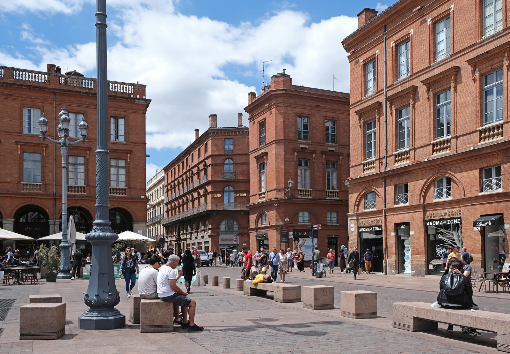

Visiter Toulouse, le plaisir de prendre son temps.
Vous profitez de la découverte. RCT31 vous aide à organiser le transport.

Photo : Place du Capitole à Toulouse — kallerna, CC BY-SA 4.0. Redimensionnement et compression WebP.
Du Capitole aux bords de Garonne
Commencez votre découverte par la place du Capitole et ses façades de brique. Poursuivez vers la basilique Saint-Sernin ou le couvent des Jacobins, selon vos envies. Pour terminer la balade, les quais de Garonne offrent un beau point de vue sur le Pont Neuf et le dôme de la Grave.
Une sortie qui respecte votre rythme
Choisissez deux ou trois étapes plutôt qu’un programme trop chargé. Prévoyez une pause, du temps pour marcher et les éventuelles réservations des lieux que vous souhaitez visiter. Les horaires et conditions d’accès se vérifient directement auprès des sites.
Votre chauffeur privé pour l’aller et le retour
Indiquez votre lieu de départ, les étapes souhaitées, le nombre de voyageurs et l’heure de retour. René vous confirme la faisabilité, la disponibilité et le tarif avant réservation. Les déplacements touristiques, notamment vers Tarbes, sont organisés sur demande ; il s’agit d’un transport avec chauffeur, sans prestation de guide incluse.
Pour préparer les visites : Office de tourisme de Toulouse.